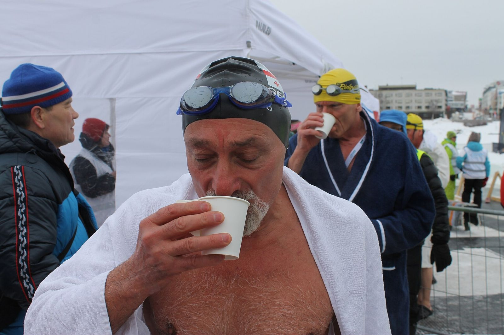

In short
Afterdrop is the cooling that continues after you leave the water: you can feel colder ten minutes after getting out than when you got out, with shivering or even dizziness. To warm up: dry off and dress quickly and warmly, have a warm drink, move gently without hard effort, and stay warm and calm for about fifteen minutes. The Swiss Lifesaving Society advises against a hot shower straight after.
What is afterdrop?
It is the drop in body temperature that continues once you are already out of the water and dry. Open-water swimming guides often place it about ten minutes after getting out; it can last longer after a long swim. You feel it as a wave of cold, stronger shivering, sometimes dizziness.
How do you warm up after a winter swim?
- Change straight away: take off your wet swimsuit, dry off and put on warm, dry clothes, out of the wind (Swiss Lifesaving Society).
- Cover your head, hands and feet: hat, gloves, warm socks.
- Drink something warm: the lifesaving society recommends a warm drink to warm up from the inside.
- Move gently: walk, stamp your feet. Avoid hard exercise, which can make afterdrop worse (DAN Alert Diver).
- Stay warm and calm for about fifteen minutes before heading off, especially by bike or car.
Why avoid a hot shower straight after?
The Swiss Lifesaving Society advises against it right after a cold-water swim. Warm up first by dressing and drinking something hot; the shower can come later, once your body is back to normal.
When should you worry?
If the shivering does not stop, or the person becomes confused, clumsy or drowsy, get them somewhere warm and call emergency services (144 in Switzerland, 15 or 112 in France): these are signs of hypothermia, which needs supervised rewarming.
Also read: the first 90 seconds in cold water and winter swimming kit. The winter swimming guide lists Lake Geneva’s beaches and saunas.
Lake Geneva’s water right now
Each beach’s water temperature is in the My Lake app, updated every three hours.
Disclaimer. This article gives general information taken from the sources cited; it is not medical advice. Cold-water swimming puts real strain on the heart and can be dangerous: talk to a doctor before you start, especially with a heart condition, high blood pressure or during pregnancy. Never swim alone and follow lifeguards’ instructions. You swim at your own risk; in an emergency, call 144 in Switzerland or 112.